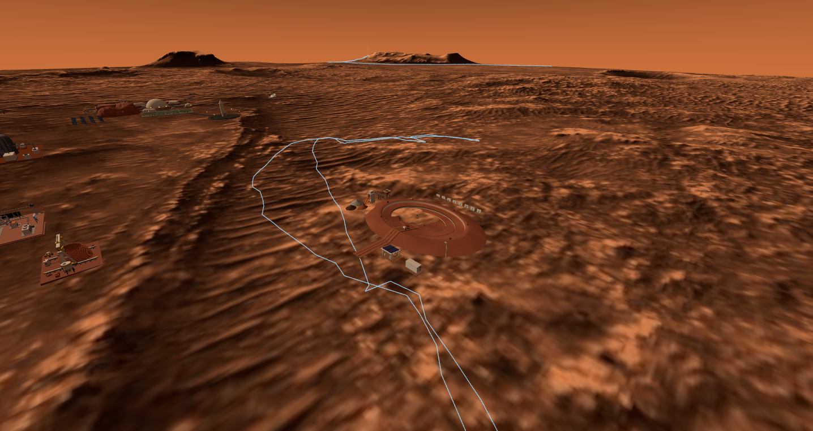
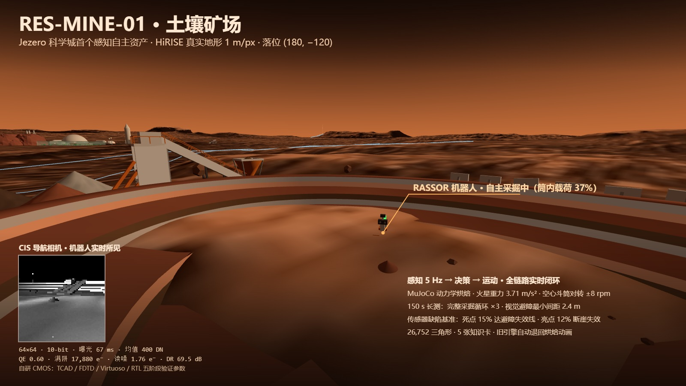

土壤矿场
res-mine-01 · 城里第一个"睁着眼干活"的资产 · 感知 → 决策 → 运动 5 Hz 闭环

引擎内航拍:79 m 螺旋露天矿 · RASSOR 机器人在坑心作业 · 背景是科学城

机器人实时所见:CIS 导航相机 64×64 · 10-bit · 曝光 67 ms(现场报告)

FDTD 光学仿真:像素量子效率光谱 —— QE 0.60 @ 可见光(自研 CMOS)

系统噪声分解:散粒/读出/暗电流 —— 动态范围 69.5 dB 的来历
📐 感知闭环桅杆相机 5 Hz → CIS 成像模型 → 亮度避障 → 状态机(挖掘/运土/卸料)——引擎离屏渲染,资产不碰 renderer
🔬 CIS 底层自研 CMOS 五阶段验证:TCAD / FDTD / Virtuoso / RTL——QE 0.60 · 满阱 17,880 e⁻ · 读噪 1.76 e⁻ · DR 69.5 dB
📐 动力学MuJoCo 烘焙:火星重力 3.71 m/s² · 空心斗筒对转 ±8 rpm——过冲与下垂都是白送的真实感
📐 长测150 s 连续运行:完整采掘循环 ×3 · 视觉避障最小间距 2.4 m · 航位推算 + 地理围栏
📐 缺陷实验传感器缺陷-任务联合基准:死点 15% 达避障失效线 · 亮点 12% 断崖失效——芯片指标直接换算成任务风险
城内26,752 三角形 · 5 张知识卡 · 无传感器通道的旧引擎自动退回烘焙动画(优雅降级)